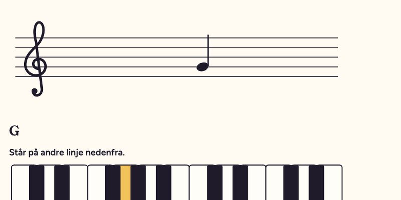
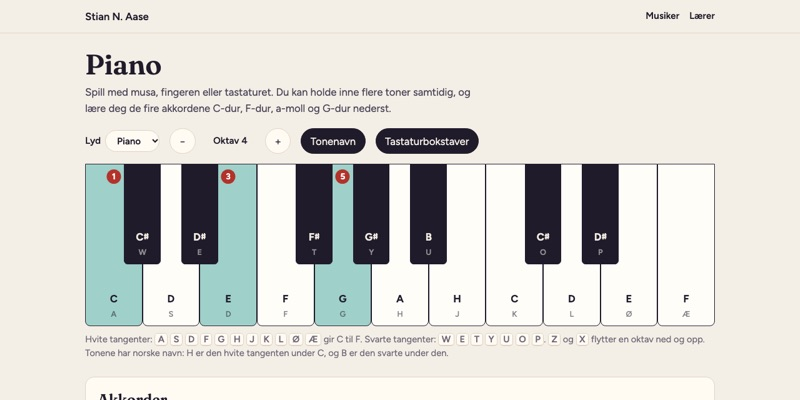
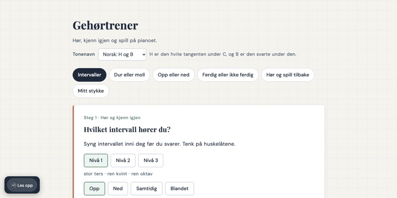

- Fritt å bruke
- Barnetrinnet
- Ungdomstrinnet
Øvingstavler og musikkverktøy for klasserommet
Her er fire øvingstavler som jeg har laget til min egen undervisning. Tavlene er til den konkrete øvingen sakkyndige vurderinger og IOP-er ofte ber om, og som det har vært vanskelig å finne gode verktøy til. Med KI har jeg kunnet lage dem selv, prøve dem i timen og justere dem etterpå.
Om de passer, avhenger mer av eleven enn av klassetrinnet. Tavlene kan brukes med én elev, en liten gruppe eller hele klassen, fra barnetrinnet til ungdomstrinnet. I tillegg er det tre musikkverktøy for musikkteori, pianoøving og gehørtrening.
Trygt å bruke. Alle kan bruke verktøyene fritt, uten innlogging. De sender ingenting noe sted, og siden har ingen sporing. Det du skriver inn, blir bare liggende i nettleseren på maskinen du bruker. Når en side er åpnet, virker den også uten nett.
Øvingstavler
Til én elev, en liten gruppe eller hele klassen, fra barnetrinnet til ungdomstrinnet.
- TalltavlaPrøv: Start med fem minutter muntlig drill, og la eleven vise på tallinja hvor svaret ligger.
- OrdtavlaPrøv: Ti minutter med én elev kan være noen runder høyfrekvente ord og ett lydmønster, som kj, lest rad for rad.
- EngelsktavlaPrøv: Ta en kort runde med Samme lyd før skriving, der eleven velger mellom ord som their og there.
- BegrepstavlaPrøv: Lim inn begrepene fra temaet før timen, og la eleven forklare et begrep uten å si ordet.
Musikk
Lær å lese noter, spill og lytt, på lærerens maskin eller på elevens egen.

Grunnkurs i noterPrøv: Ta ett trinn i starten av timen, og la elevene øve i fem minutter før dere går videre.
PianoPrøv: La eleven finne C-dur selv, og øv så på rekka C – G – Am – F.
Gehørtrener (avansert)Prøv: Start med intervaller på nivå 1, og la eleven synge intervallet inni seg før svaret.

Hvem står bak
Jeg heter Stian Norgård Aase og er lærer på ungdomstrinnet. Gjennom rundt tjue år med én-til-én-undervisning i kulturskolen og arbeid med individuelt tilrettelagt opplæring i skolen har jeg lært å se hva den enkelte eleven trenger, enten det er en enklere oppgave eller en større utfordring.
Jeg har selv savnet slike verktøy. Det jeg fant, var ofte spredt, gammelt eller hadde sluttet å virke. Øvelsene på tavlene er laget ut fra konkrete situasjoner i klasserommet, og jeg bruker dem selv i timene. Jeg vet at mange lærere leter etter det samme, og håper at de finner noe de kan bruke her.
Har du funnet en feil, har du et forslag til forbedring, eller savner du en tavle som ikke finnes ennå? Send meg en e-post. Jeg vil gjerne høre fra deg.
Alle verktøyene her kan brukes og deles fritt med navngivelse, under lisensen CC BY-SA 4.0. Det betyr at du kan dele og tilpasse dem, så lenge navnet mitt står med og det du lager, deles på samme vilkår.
Hvem som har gjort hva
Verktøyene er laget i samarbeid med KI-assistenten Claude fra Anthropic. Behovet, de fleste idéene og de pedagogiske valgene er mine. Claude har skrevet koden og førsteutkastene til tekstene, og jeg har prøvd verktøyene i undervisningen og bestemt hva som er med. Hver ny versjon testes og faktasjekkes før den legges ut.
Kilder og lisenser ordlister, skrifttyper og vilkår
- Talltavla bruker ingen hentede lister. Oppgavene, tallene og forklaringene er laget for tavla, og svarene er regnet etter i automatiske tester.
- Ordtavla: «Høyfrekvente ord» bygger på to frekvenslister: «Frekvensordliste (bokmål) fra ord i norsk avisspråk» av CLARINO Bergen senter og Gunn Inger Lyse Samdal (Universitetet i Bergen, 2025, lisens CC BY 3.0), og den norske lista i FrequencyWords av hermitdave, som bygger på filmundertekster fra OpenSubtitles (lisens CC BY-SA 4.0). Lista er bearbeidet og kan brukes videre på vilkårene i CC BY-SA 4.0. Ordparene i «Samme lyd» er funnet i de samme frekvenslistene, og øvelsestypene bygger blant annet på Kristin Røeds hefte «Litt om lese- og skriveopplæring» (2020), brukt som metode. Ordene i de andre fanene, setningene og tekstene er skrevet for tavla.
- Engelsktavla: «Høyfrekvente ord» er de 300 vanligste ordformene i wordfreq av Robyn Speer (lisens CC BY-SA 4.0), bearbeidet. Ordene i de andre fanene er valgt for tavla og står ikke i noen bestemt kartleggingsprøve eller læreverk.
- Begrepstavla har ingen ferdige ord. Du limer inn begrepene selv.
- Grunnkurs i noter, Piano og Gehørtrener lager lyden i nettleseren og bruker ingen lydfiler. Gehørtreneren lagrer det du skriver i «Mitt stykke» bare i nettleseren på maskinen du bruker.
- Grunnkurs i noter: melodiene er folketonen «Blomster små» og begynnelsen av «Ode til gleden» av Ludwig van Beethoven. Begge er fri for opphavsrett, og notene er skrevet av for kurset.
- Skrifttypene Libre Franklin og Oswald har lisensen SIL Open Font License og ligger inne i filene, så verktøyene henter ingenting fra nettet.
Kildene står også under «Til læreren» i hver tavle.
Kontakt
Jeg tar gjerne imot spørsmål om verktøyene, feil du har funnet og forslag til nye tavler, og forespørsler om kurs for lærere eller samarbeid. Send meg en e-post.
Vil du lese mer om meg og høre musikken min? Les og lytt her.